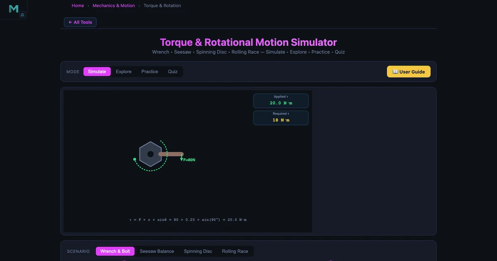
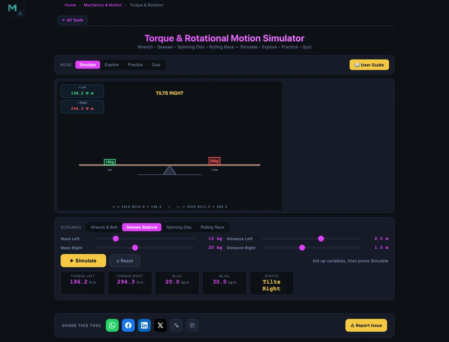

Torque and Rotation Simulator — Teaching Rotational Physics from Wrenches to Rolling Spheres

- Torque is the rotational effect of a force, calculated as τ = F × r × sinθ, where F is the force, r the distance from the pivot, and θ the angle between them — maximum at θ = 90° and zero at θ = 0°.
- Rotational equilibrium requires the net torque about any point to be zero (Στ = 0), which for a seesaw reduces to m₁d₁ = m₂d₂.
- Newton's second law for rotation is τ = Iα, so a body's angular acceleration depends on its moment of inertia I, which is set by how its mass is distributed about the axis.
Ask any student who has struggled with rotational physics and they will tell you the same thing: the formulas are fine, the diagrams are fine, but they never know which axis to take moments about, or why the angle in τ = Fr sinθ is the angle between the force and the lever arm rather than the angle between the force and the vertical. These are not conceptual failures — they are spatial reasoning gaps that a static textbook diagram cannot close. The Torque & Rotation Simulator gives students a live animated environment to build that spatial intuition, one concept at a time.
Torque Is Not Just Force — The Three Factors Students Must Feel
Here is a classroom scene that happens more often than it should. A student calculates the torque on a bolt correctly using τ = Fr sinθ, gets the right number, and then cannot explain why moving their grip closer to the bolt head makes it harder to tighten. They did the algebra. They did not understand the physics.
Torque depends on three things: the magnitude of the force applied, the distance from the pivot point (the moment arm length), and the angle between the force direction and the lever arm. The formula captures all three:
\[\tau = F \times r \times \sin\theta\]
Maximum torque occurs at θ = 90° (force perpendicular to the lever arm). At θ = 0° or 180°, sinθ = 0 and no torque is produced at all, regardless of how large the force is — because a force along the lever arm passes through the pivot and causes only compression, not rotation.
For a 120 N force applied at 0.30 m from a bolt at θ = 90°:
\[\tau = 120 \times 0.30 \times \sin(90°) = 120 \times 0.30 \times 1.0 = 36.0 \text{ N·m}\]
The Torque & Rotation Simulator shows the animated wrench diagram alongside this calculation. Students can drag the force angle from 0° to 180° and watch the torque value change while the effective moment arm shortens. That animation makes sinθ intuitive in a way that a single static diagram does not.
Rotational Equilibrium — The Seesaw Principle in Engineering

Rotational equilibrium is the condition where the net torque about any point is zero:
\[\sum \tau = 0 \quad \Longrightarrow \quad \tau_{\text{clockwise}} = \tau_{\text{counter-clockwise}}\]
For a seesaw where both children experience the same gravitational acceleration g, the condition simplifies to:
\[m_1 \times d_1 = m_2 \times d_2\]
If a 30 kg child sits 2.0 m from the fulcrum, a 20 kg child must sit at:
\[d_2 = \dfrac{m_1 \times d_1}{m_2} = \dfrac{30 \times 2.0}{20} = 3.0 \text{ m}\]
This is not just a playground problem. The same principle determines beam reaction forces in structural analysis, bolt-group centroids in joint design, and the balance of forces on any lever-based machine. The Seesaw/Lever concept card shows the mass positions and torque arrows simultaneously, so students can drag either child and watch the system tilt or balance in real time.
A particularly useful classroom task: give students the seesaw in an unbalanced state and ask “which way does it tilt, and by how much?” For a 15 kg child at 2.5 m left and a 25 kg child at 1.2 m right:
\[\tau_{\text{left}} = 15 \times 9.81 \times 2.5 = 367.9 \text{ N·m} \qquad \tau_{\text{right}} = 25 \times 9.81 \times 1.2 = 294.3 \text{ N·m}\]
The left side has the larger torque and tilts down. Students verify it in the simulator. Prediction then verification — the equilibrium calculation lands as a felt result, not just a number.
Newton’s Second Law for Rotation — From Torque to Spin
Translational Newton’s second law F = ma has a direct rotational analogue:
\[\tau = I \cdot \alpha\]
where \(I\) is the moment of inertia (kg·m²) and \(\alpha\) is the angular acceleration (rad/s²). Rearranging, \(\alpha = \tau/I\). A disc with I = 0.5 kg·m² under a torque of τ = 15 N·m accelerates at:
\[\alpha = \dfrac{15}{0.5} = 30 \text{ rad/s}^2\]
The moment of inertia depends on shape. For common bodies rotating about their central axis:
\[I_{\text{disc}} = \tfrac{1}{2}mr^2 \qquad I_{\text{ring}} = mr^2 \qquad I_{\text{sphere}} = \tfrac{2}{5}mr^2\]
For a solid disc of m = 4 kg and r = 0.30 m: I = 0.5 × 4 × 0.09 = 0.18 kg·m². A thin ring of identical mass and radius has I = 4 × 0.09 = 0.36 kg·m² — exactly double, because all the ring’s mass sits at maximum radius. The simulator concept card for Moment of Inertia lets students compare these values side by side, making the shape-dependence concrete rather than abstract.
Rolling Motion — Shape Determines the Race
One of the most elegant results in rotational physics is the rolling race: if you release a solid sphere, a solid cylinder, and a hollow cylinder from the same height on an incline, the sphere always wins. Not because of mass or size, but because of shape alone. The acceleration for rolling without slipping is:
\[a = \dfrac{g \sin\theta}{1 + I/(mr^2)}\]
The ratio I/mr² is shape-dependent and dimensionless: solid sphere = 0.4, solid cylinder = 0.5, hollow cylinder = 1.0. On a 30° slope (g = 9.81 m/s²):
\[a_{\text{sphere}} = \dfrac{9.81 \times \sin30°}{1 + 0.4} = \dfrac{4.905}{1.4} = 3.50 \text{ m/s}^2\]
\[a_{\text{cylinder}} = \dfrac{9.81 \times 0.5}{1.5} = 3.27 \text{ m/s}^2 \qquad a_{\text{hollow}} = \dfrac{9.81 \times 0.5}{2.0} = 2.45 \text{ m/s}^2\]
Mass and radius cancel completely — a bowling ball and a marble with the same shape roll at the same speed from the same height. Students find this genuinely surprising. The Rolling Motion concept card shows the incline and the three objects side by side, and the built-in problem generator produces fresh numerical examples for each session.
Using the Torque & Rotation Simulator in a Physics Lesson
Warm-up (5 min). Open the Wrench/Bolt Torque concept. Ask: “An M16 bolt needs 90 N·m. You have a 0.40 m wrench and can push with 200 N. Can you tighten it?” Students calculate τ = 200 × 0.40 × 1.0 = 80 N·m. Not enough. This immediately raises the question: “What would you do?” (Use a longer wrench, or push harder.) The engineering context gives torque a purpose students care about.
Equilibrium session (15 min). Open the Seesaw/Lever card. Set the unbalanced example above and ask students to find where the 25 kg child should sit to balance. They calculate, drag the position, and verify. Then extend to a three-force lever problem using Στ = 0 from a chosen pivot point.
Rotational dynamics (15 min). Open Angular Acceleration. Give disc I = 0.5 kg·m² under τ = 15 N·m → α = 30 rad/s². Ask: “What torque is needed to produce the same α in a ring of the same mass and radius?” Since I_ring = 2 × I_disc, τ must double to 30 N·m. Students see why shape matters before you define moment of inertia formally.
Built-in problem generator (10 min). The simulator includes a randomised problem generator across all 12 concepts. Students work through 3–4 problems independently as in-class practice and check against the stepped solutions. This replaces a printed worksheet and gives each student a different numerical problem, which deters copying and forces genuine engagement.
For the structural analysis extension — how moments in a beam lead to bending stress — the Shear Force and Bending Moment Diagram guide shows how equilibrium of moments scales from a seesaw to a loaded beam.
Try These Free Physics Simulators
All tools below are free — no account, no download, runs in any browser.
Key Takeaways
- Torque τ = Fr sinθ depends on three factors: force magnitude, moment arm length, and angle. Maximum torque occurs at θ = 90°; no torque at θ = 0° regardless of force magnitude.
- Rotational equilibrium Στ = 0 gives m⊂1;d⊂1; = m⊂2;d⊂2; for a seesaw — a 30 kg child at 2.0 m is balanced by a 20 kg child at 3.0 m. The same principle applies to beam reactions and lever machines.
- Newton’s second law for rotation: τ = Iα. A disc (I = 0.5 kg·m²) under 15 N·m reaches α = 30 rad/s²; a ring of identical mass and radius requires double the torque for the same α.
- Rolling race result: solid sphere (I/mr² = 0.4) always beats solid cylinder (0.5) and hollow cylinder (1.0) regardless of mass or radius — shape alone determines the winner. a_sphere = 3.50 m/s² vs a_hollow = 2.45 m/s² on a 30° slope.
- Real applications: a 200 N force on a 0.40 m wrench cannot tighten an M16 bolt needing 90 N·m (gives only 80 N·m) — the kind of practical engineering result that makes the formula memorable.
- The built-in randomised problem generator across 12 concept areas provides unlimited unique practice problems, making the simulator a complete in-class physics assessment tool.
Frequently Asked Questions
What is torque and how is it calculated?
Torque (τ) is the rotational equivalent of force — it measures how effectively a force causes rotation about a pivot. The formula is τ = F × r × sinθ, where F is the applied force, r is the distance from the pivot to the point of application, and θ is the angle between the force vector and the lever arm. Maximum torque occurs at θ = 90°. For example, a 120 N force applied at 0.30 m from a bolt at 90° produces τ = 120 × 0.30 × 1.0 = 36.0 N·m.
What is rotational equilibrium and how do you apply it to a seesaw?
Rotational equilibrium occurs when the sum of all torques about any point equals zero: Στ = 0. For a seesaw, this means m⊂1; × d⊂1; = m⊂2; × d⊂2; (since g cancels). If a 30 kg child sits 2.0 m from the fulcrum, a 20 kg child must sit at d⊂2; = (30 × 2.0) / 20 = 3.0 m on the other side to balance. The Torque & Rotation Simulator’s Seesaw/Lever concept card shows this interactively, letting students drag positions and watch whether equilibrium is achieved.
How does moment of inertia affect angular acceleration?
Newton’s second law for rotation is τ = Iα, so angular acceleration α = τ/I. A larger moment of inertia (more mass distributed farther from the axis) produces smaller angular acceleration for the same torque. A disc with I = 0.5 kg·m² under τ = 15 N·m gives α = 30 rad/s². The formula for a solid disc is I = ½mr² — for m = 4 kg, r = 0.30 m, I = 0.18 kg·m². A ring of the same mass and radius has I = mr² = 0.36 kg·m² — exactly double, because all mass is at maximum radius.
Why does a solid sphere roll down a slope faster than a hollow cylinder?
For rolling without slipping, the acceleration down an incline is a = g·sinθ / (1 + I/mr²). The ratio I/mr² depends only on shape: solid sphere = 0.4, solid cylinder = 0.5, hollow cylinder = 1.0. Smaller ratio means larger acceleration. So on a 30° slope, a solid sphere accelerates at 9.81 × 0.5 / 1.4 = 3.50 m/s², a solid cylinder at 3.27 m/s², and a hollow cylinder at only 2.45 m/s². Mass and radius cancel completely — only shape matters.
What everyday situations involve torque that are useful in physics lessons?
Torque appears constantly in everyday life. A door handle placed far from the hinge maximises the moment arm r, so less force opens the door. A wrench on a bolt uses τ = F × r × sinθ — an M16 bolt needing 90 N·m torque cannot be tightened by a 200 N force on a 0.40 m wrench at 90° (τ = 80 N·m, not enough). A steering wheel uses a couple τ = F × d. Seesaws and balance scales rely on rotational equilibrium m⊂1;d⊂1; = m⊂2;d⊂2;. The Torque & Rotation Simulator covers all of these applications in its concept cards.
Rotational physics is one of those topics where students perform well on calculation problems and yet struggle to explain what is happening physically. The moment arm diagram helps. Worked examples help. But nothing consolidates understanding like dragging a mass along a seesaw until it balances, or watching the precession rate change as spin speed increases. That is what the simulators offer that a textbook cannot.
Start with the Torque & Rotation Simulator and the bolt-tightening warm-up in your next class — it takes five minutes, creates immediate engagement, and anchors every subsequent formula to a concrete engineering problem.